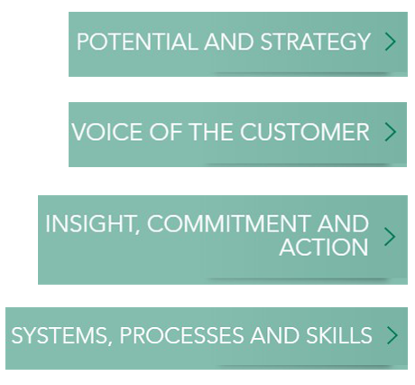
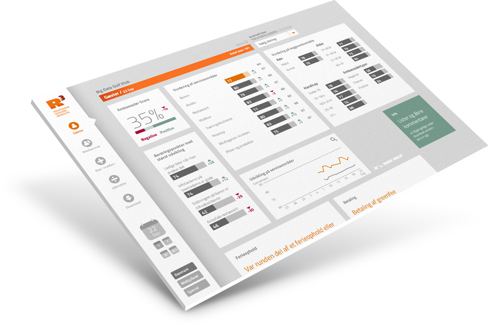

A UNIQUE APPROACH TO CLASSICAL ANALYSIS
We want to raise the bar
Raw Milk helps companies design and implement Customer Experience Management. We create customer experiences that are consistent and differentiated. That build loyalty. That create ambassadors.
Based on your current situation and ambitions, we design unique solutions. Solutions, that are strategically founded, embedded into your organization, and that will be appreciated by your customers.
When you’re dealing with Raw Milk, you’re dealing with the best there is. Our expertise is wide ranging and we design full-service solutions all the way from idea to implementation.

THE CUSTOMER IS ALWAYS AT THE CENTER OF OUR ACTIONS
Customer Experience Management
CEM is all about delivering an excellent customer experience in every instance and not just in a selection of contact points. The ability to provide a full and valuable end-to-end experience is what gives a company its competitive edge.
In order to succeed with CEM, an effective Voice of the Customer program is required along with a holistic and intuitive dissemination platform that creates insight, commitment and action among the employees.
CEM is also about optimizing systems, processes and skills in order to have them support excellent customer experiences in every contact point.
CEM AS THE DRIVER OF GROWTH
How large is your unresolved potential?
CEM is about meeting or exceeding the expectations of the customers and thereby increasing both customer retention, turnover per customer and the extent of which customers will recommend your company to new customers.
CEM also decreases costs for handling complaints, for sales and for marketing. Usually employees are also more productive as a by-product of CEM.
If you wish to know what unfulfilled potential CEM can unlock in your company, please don’t hesitate to contact us. We would love to tell you more – no strings attached.
You’ll find us here.

CUSTOMER EXPERIENCES - EXPERIENCED REAL-TIME
CEM-strategy operationalized
Get your results online and in real-time with our user friendly R3 dashboard. R3 has been specifically designed to anchor customer surveys within organizations.
Contact us and let us demonstrate R3 using key figures from your own company.
PLAYERS 1ST WILL GROW THE NUMBER OF DANISH GOLFERS
20.000 new golfers in Denmark
First and foremost, the DGU wants the program to increase member retention among all participating clubs. Specifically, the goal is to grow member retention by 10 percent. A separate goal is that clubs participating in the program improve significantly with regards to integrating and retaining new members.
Also, the program aims to grow the number of members that will actually recommend a particular club to potential new players. This will mean that participating clubs should see an influx of new players.
It is expected that the Players 1st program will grow the number of golfers in Denmark by 10-15 percent over the next three years. If that happens, it will mean a significant economic boost to the golf clubs in Denmark.
Do you have ambitions for greater customer loyalty?
If so, we would like to welcome you at Raw Milk. Whether you need strategic counseling on Customer Experience Management or the design of a Voice of the Customer program, we are here to help.
We are experts at identifying and extracting unfulfilled potential with your customers and in clarifying drivers and barriers that affect customer loyalty.
Raw Milk
Søndergade 66B
8000 Aarhus C
Tlf: +45 6076 6920
E-mail: mail@rawmilk.dk